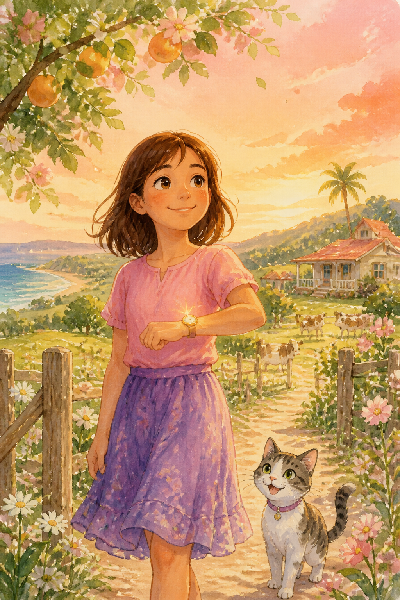
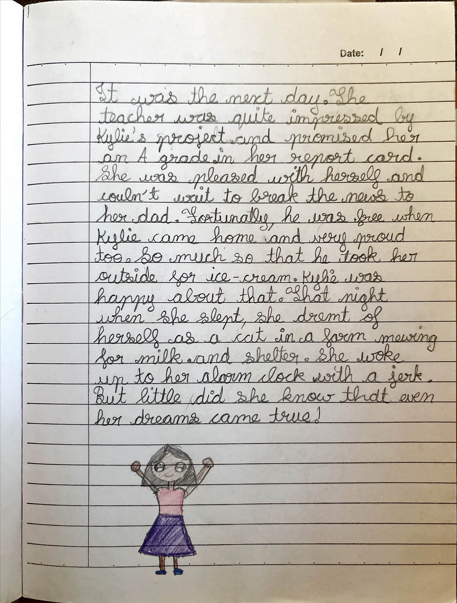
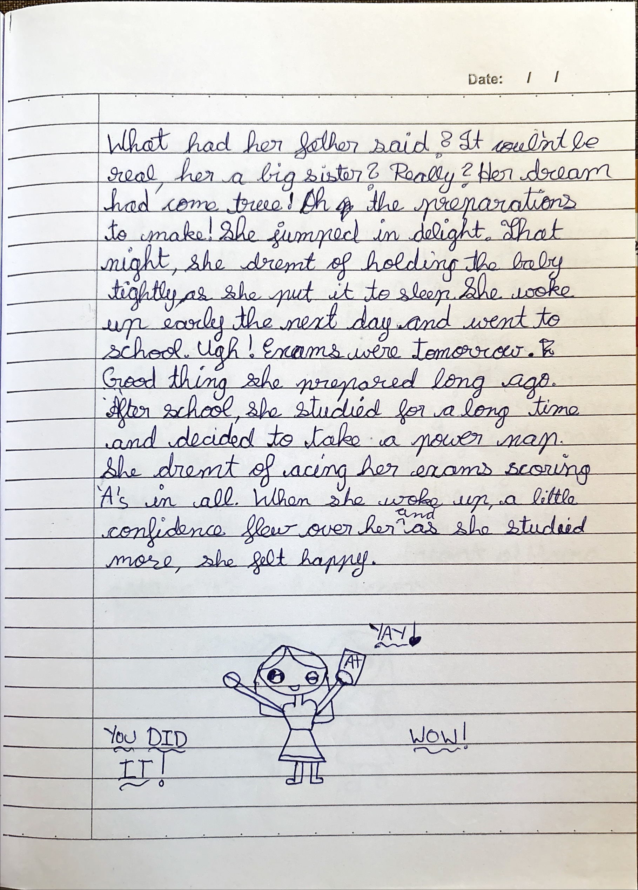
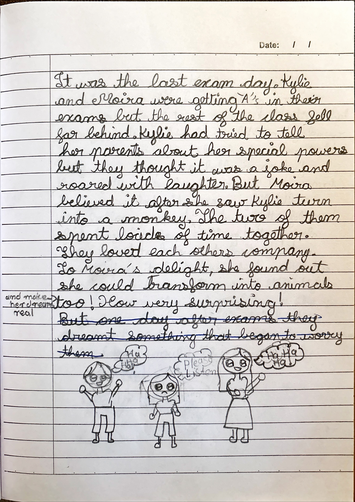
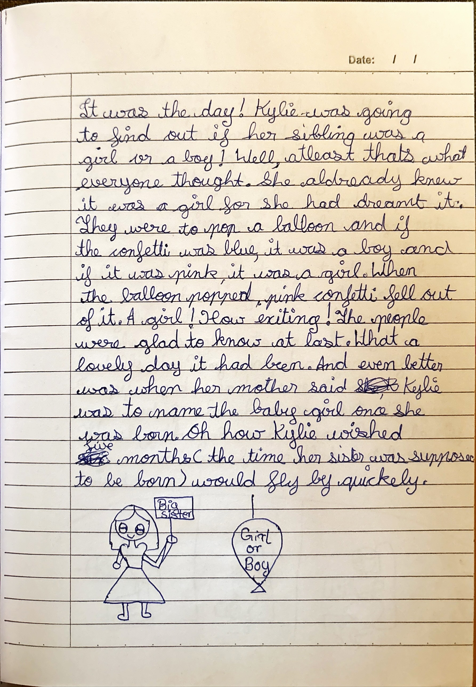
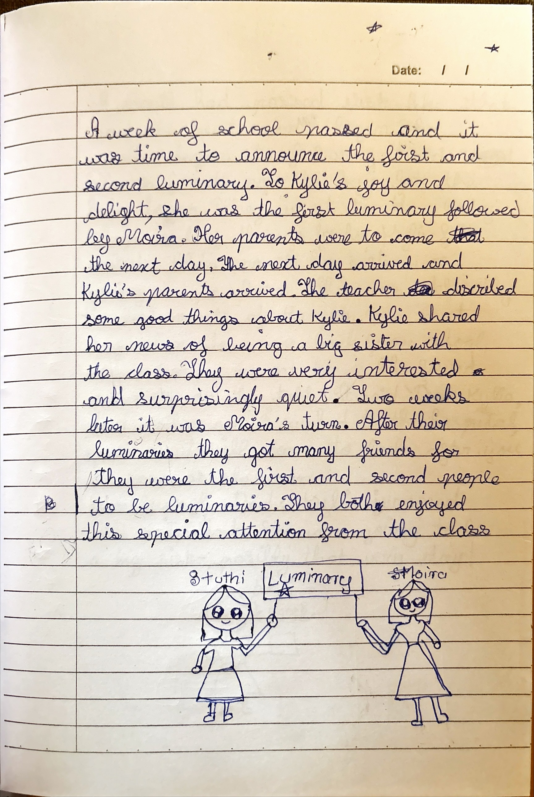
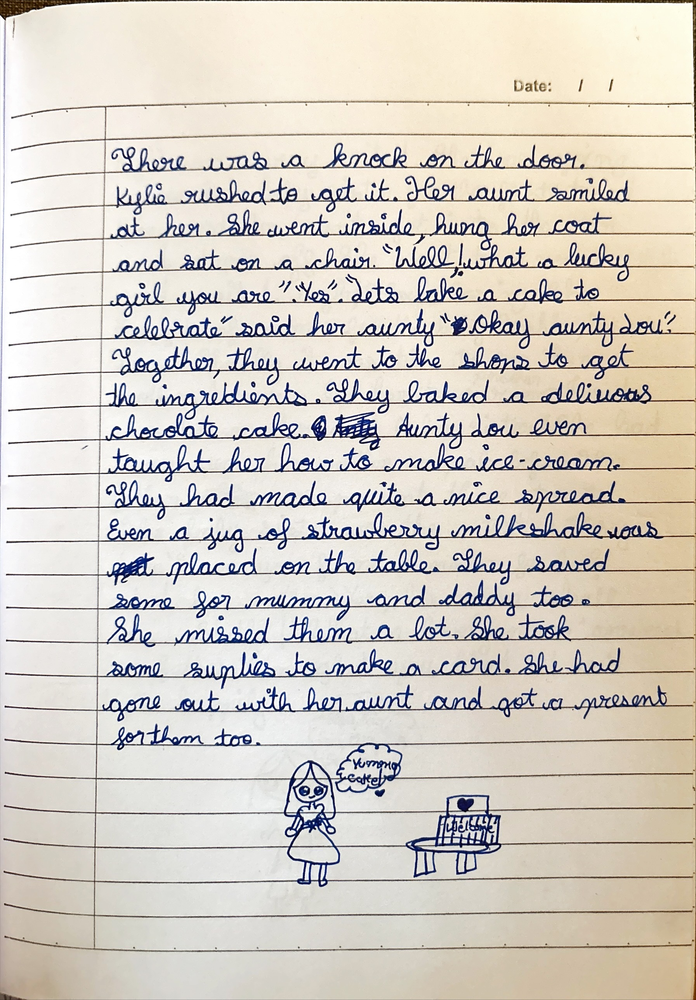
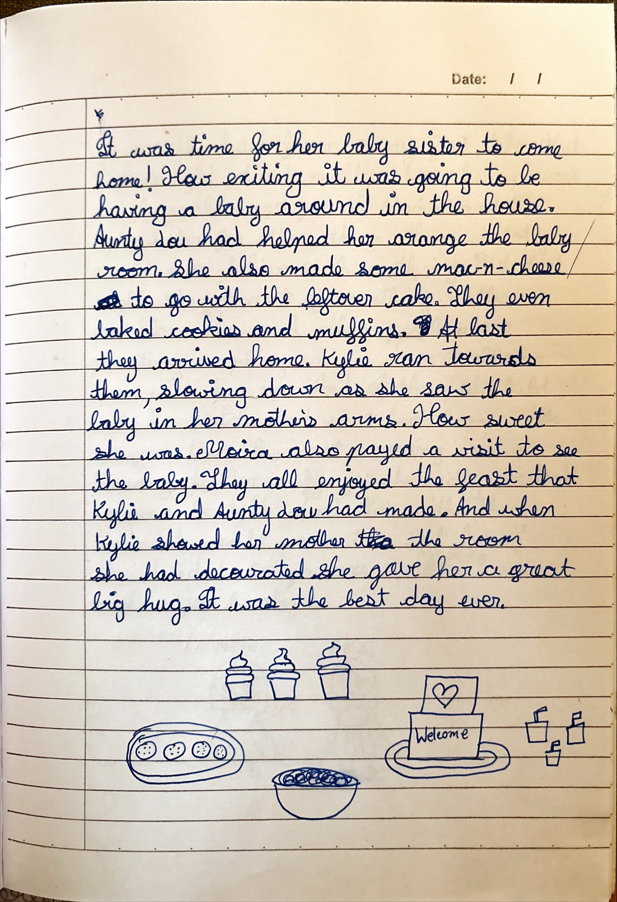
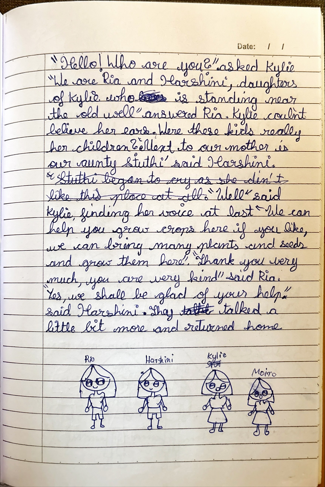
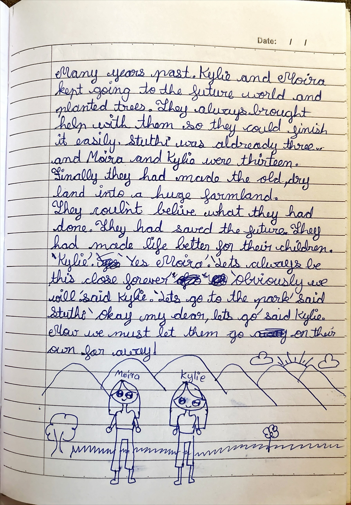

Kylie’s StoryWhen dreams come true — even the peculiar ones
Kylie’s dreams come true. She turns into a cat, becomes a big sister, and — with Moira — plants a future that had gone dry.
Kylie, Moira & a watch

Chapters
Even Her Dreams Came True
Kylie had just finished her school project — and she could hardly wait for what the teacher would say.
It was the next day. The teacher was quite impressed by Kylie’s project and promised her an A grade in her report card. She was pleased with herself and couldn’t wait to break the news to her dad. Fortunately, he was free when Kylie came home, and very proud too. So much so that he took her outside for ice-cream. Kylie was happy about that.
That night when she slept, she dreamt of herself as a cat in a farm, mewing for milk and shelter. She woke up to her alarm clock with a jerk. But little did she know that even her dreams came true!
It was the next day and, to Kylie’s astonishment, they were going to visit her grandfather on his farm, as it was a Saturday. Her dad started the car and they were off. They had a long journey and finally reached. At the farm, there were lots of things to do. Kylie lay on the soft green grass all alone. She decided to turn into a cat. Once she did, she felt very hungry and mewed for milk. Just like my dream, she thought to herself. She decided to explore more later and changed back to her human form.
It was Sunday and time to go home. Kylie hopped into the car and said goodbye to her grandfather. It took hours to go home and she found it a bit too quiet. So much so that she slept in the car. She dreamt of being a big sister to a baby girl. How wonderful it would be! No more being lonely or the youngest.
“Kylie, we’re home,” said her mother. Kylie woke up and went inside.
“I think I might have a rest,” said her mother. “I am very tired.”
Kylie remembered her dream. Had it come true? Her mother went to the doctor with her father and came back smiling.
“Sit down, Kylie. I have great news,” said her father. “You are going to be a big sister!”
What had her father said? It couldn’t be real — her, a big sister? Really? Her dream had come true! Oh, the preparations to make! She jumped in delight.
That night, she dreamt of holding the baby tightly as she put it to sleep. She woke up early the next day and went to school. Ugh! Exams were tomorrow. Good thing she prepared long ago. After school, she studied for a long time and decided to take a power nap. She dreamt of acing her exams, scoring A’s in all. When she woke up, a little confidence flew over her, and as she studied more, she felt happy.

Moira Believes
She woke up early the next day and ran to school with a smile. The question paper was very easy. But to her shock, everyone was groaning frustratedly. How come?
When the exam was over, she went to her friend Moira, who was standing sadly in a corner.
“I failed, I know I did!” said Moira.
“Well, I can help you for the rest of the exams if you come over to my house during study holidays,” said Kylie.
“You really would?”
“Of course!”
That very day Moira came over and the two of them studied. She came over the next day too. Kylie dreamt of Moira getting A’s in her exams.
It was the last exam day. Kylie and Moira were getting A’s in their exams, but the rest of the class fell far behind. Kylie had tried to tell her parents about her special powers, but they thought it was a joke and roared with laughter. But Moira believed it after she saw Kylie turn into a monkey. The two of them spent loads of time together. They loved each other’s company. To Moira’s delight, she found out she could transform into animals too — and make her dreams real! How very surprising!

It was the day! Kylie was going to find out if her sibling was a girl or a boy! Well, at least that’s what everyone thought. She already knew it was a girl, for she had dreamt it. They were to pop a balloon, and if the confetti was blue it was a boy, and if it was pink, it was a girl. When the balloon popped, pink confetti fell out of it. A girl! How exciting! The people were glad to know at last. What a lovely day it had been. And even better was when her mother said Kylie was to name the baby girl once she was born. Oh how Kylie wished five months (the time her sister was supposed to be born) would fly by quickly.

Goa, Raj & the Luminary
It was tripping time! A month of summer vacations had fled by and now Kylie was going to Goa with Moira! How fun it was going to be! They were going on a road trip there. They drove till Moira’s house, got out to eat some breakfast and set off. Kylie couldn’t wait to go to the beach. She loved building sandcastles. From Bengaluru to Goa was a long drive, so she was glad to have her friend to talk to. They played a game of I Spy and read some books. They got out for lunch and set off again. Finally they reached Goa. How lovely the view was from their hotel room window.
Once they settled a bit they changed into swimsuits and went to the swimming pool. Kylie’s dad came with them. They had a lovely time. After a scrumptious dinner, they fell fast asleep. The next day they went to the beach. How lovely it was! Like this they spent the week exploring exciting places. Finally, the day came when they had to go home. Well, never mind — they would come some other time!
Once they reached home, Kylie’s mother took some rest. They talked about the baby and what all they had to get. How exciting it all was! But how hard it was to wait!
Time to go back to school! The summer had flown by so quickly! She had gone with Moira to the shop to buy stationery. It was sad that holidays were over, but the good thing about it was that there were only two more months left to see the baby. They were making plans. What a list of things they had to buy! But it would be worth it in the end.
Kylie went to her aunt’s house to practice on her cousin, Raj. He was just a month old. Sometimes Moira would go with her to see Raj. He was very cute and sweet. Kylie loved taking care of him. Kylie couldn’t wait to see the baby for the first time.
It was time to go to school! She and Moira walked to school together, talking happily. They went to their sections and made friends. Kylie made friends with a girl called Ruhi. She was really nice to her. Luckily, Moira and she were in the same section. There was great excitement buzzing in class when the teacher told them about an award called Luminary of the Fortnight. Every fortnight a child was awarded a badge with their parents if they were disciplined, kind, loyal, etc. Everyone hoped to be the luminary. Kylie hoped fervently she would too. She made up her mind to be as good as possible.
A week of school passed and it was time to announce the first and second luminary. To Kylie’s joy and delight, she was the first luminary, followed by Moira. Her parents were to come the next day. The next day arrived and Kylie’s parents arrived. The teacher described some good things about Kylie. Kylie shared her news of being a big sister with the class. They were very interested and surprisingly quiet. Two weeks later it was Moira’s turn. After their luminaries they got many friends, for they were the first and second people to be luminaries. They both enjoyed this special attention from the class.

Her Name Shall Be Stuthi
A month had passed just like that and the next month began. Her mother began to feel very tired. Plans for things to buy for the baby began. They went to the baby shop to buy things for her. Kylie felt excited. This month her sister was going to be born. This was definitely the best month of the year.
The next day when she came back from school, nobody was at home. She found a note on the table. It said:
Dear Kylie, Your mother and I rushed to the hospital. Your aunt will come to look after you as soon as she can. Yours lovingly — Dad.
Kylie jumped with excitement. She was going to be a big sister — possibly that very day!
There was a knock on the door. Kylie rushed to get it. Her aunt smiled at her. She went inside, hung her coat and sat on a chair.
“Well! What a lucky girl you are.”
“Yes.”
“Let’s bake a cake to celebrate,” said her aunty.
“Okay, Aunty Lou.”
Together, they went to the shops to get the ingredients. They baked a delicious chocolate cake. Aunty Lou even taught her how to make ice-cream. They had made quite a nice spread. Even a jug of strawberry milkshake was placed on the table. They saved some for mummy and daddy too. She missed them a lot. She took some supplies to make a card. She had gone out with her aunt and got a present for them too.

Kylie was very excited. She was going to see her baby sister for the first time! She and her aunt got into the car and drove off. She went to a room and waited. Ugh! How boring. She thought of names for the baby. Sophie, Minnie, Ria… Finally it was time to see her mother. A nurse led her to another room. Inside was her mother and baby sister. She had never seen her mother so pale before. Her father was present there too.
Her baby sister was the cutest sibling ever.
“Have you found a name for her?” asked her mother.
“Yes, her name shall be… Stuthi!”
“What a lovely name,” answered her father.
“I’m glad you liked it,” said Kylie happily.
It was time for her baby sister to come home! How exciting it was going to be, having a baby around in the house. Aunty Lou had helped her arrange the baby room. She also made some mac-n-cheese to go with the leftover cake. They even baked cookies and muffins. At last they arrived home. Kylie ran towards them, slowing down as she saw the baby in her mother’s arms. How sweet she was. Moira also paid a visit to see the baby. They all enjoyed the feast that Kylie and Aunty Lou had made. And when Kylie showed her mother the room she had decorated, she gave her a great big hug. It was the best day ever.

They Saved the Future
A month had flown away just like that. Kylie didn’t really show her powers to the world except for Moira and her baby sister — for other than them nobody would ever believe such a thing. But that night she dreamt of something rather peculiar. She and other people were planting saplings in a desert. Moira was with her too. And then, she held out her watch and went back home with everyone there.
The next morning was a Sunday, to her relief, for she badly needed someone to talk about this with. She knew it would come true — but how? She decided to go over to Moira’s house right after breakfast.
She ran to Moira’s house straight after breakfast and told her what had happened. Surprisingly, Moira had the same dream. They decided it was time to show the world their powers. They called their parents to the dining room and changed into animals in front of them. They were very shocked. How could it be real?
Suddenly, her watch started shaking. An entrance into a magical world! How very strange! They hopped in and found a dry piece of land. Kylie saw people who looked a lot like her family. Moira also said she had a dream of travelling to the future. Could this be the future?

“Hello! Who are you?” asked Kylie.
“We are Ria and Harshini, daughters of Kylie who is standing near the old well,” answered Ria.
Kylie couldn’t believe her ears. Were these kids really her children?
“Next to our mother is our Aunty Stuthi,” said Harshini.
“Well,” said Kylie, finding her voice at last, “we can help you grow crops here if you like. We can bring many plants and seeds and grow them here.”
“Thank you very much, you are very kind,” said Ria.
“Yes, we shall be glad of your help,” said Harshini.
They talked a little bit more and returned home.
Many years passed. Kylie and Moira kept going to the future world and planted trees. They always brought help with them so they could finish it easily. Stuthi was already three and Moira and Kylie were thirteen. Finally they had made the old, dry land into a huge farmland. They couldn’t believe what they had done. They had saved the future. They had made life better for their children.
“Kylie.”
“Yes, Moira.”
“Let’s always be this close forever.”
“Obviously we will,” said Kylie.
“Let’s go to the park,” said Stuthi.
“Okay my dear, let’s go,” said Kylie.
Now we must let them go on their own, far away!

The End